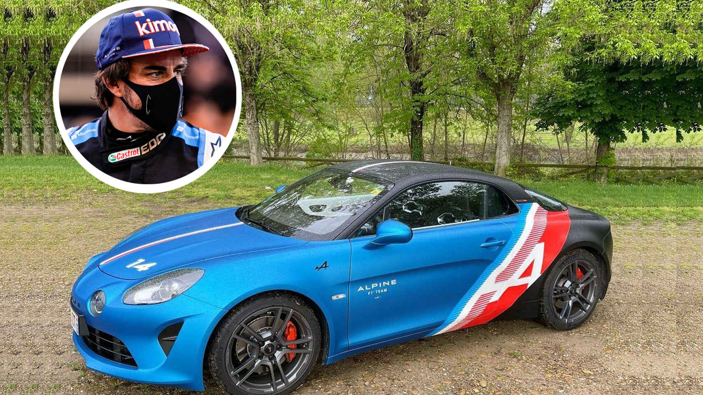
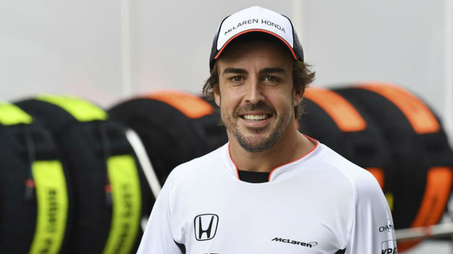

Inicio Actualidad Foro Campeonatos Galería Mi Perfil Sobre Nosotros




Este sitio web no es oficial y no está asociado en ningún modo con el grupo de compañías de la Fórmula 1. F1, FORMULA ONE, FORMULA 1, FIA FORMULA ONE WORLD CHAMPIONSHIP, GRAND PRIX y marcas relacionadas son marcas registradas de Formula One Licensing B.V.